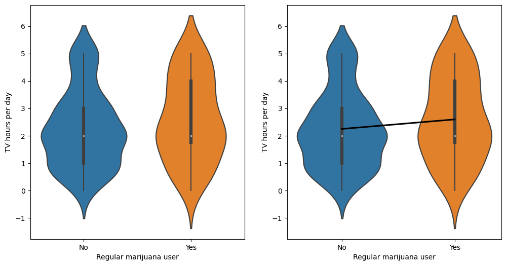
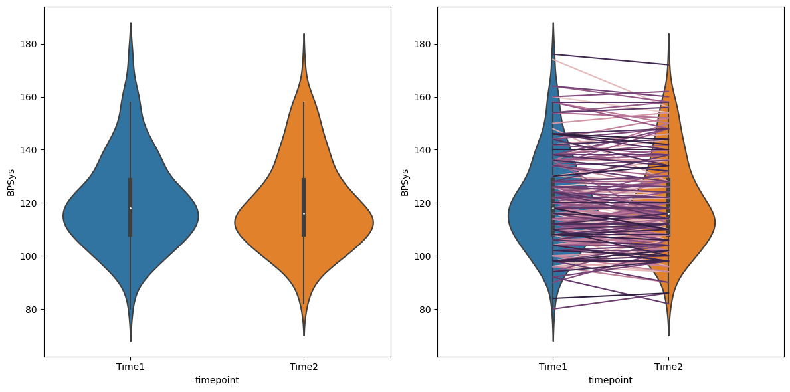

Chapter 15: Comparing means
Contents
Chapter 15: Comparing means#
import pandas as pd
import numpy as np
import matplotlib.pyplot as plt
import seaborn as sns
from scipy.stats import norm, t, binom, scoreatpercentile, binomtest, f
import pingouin as pg
import matplotlib
import statsmodels.api as sm
import statsmodels.formula.api as smf
from sklearn.metrics import r2_score, mean_squared_error
from sklearn.model_selection import KFold
import rpy2.robjects as ro
from rpy2.robjects.packages import importr
from rpy2.robjects import pandas2ri
pandas2ri.activate()
from rpy2.robjects.conversion import localconverter
# import NHANES package
base = importr('NHANES')
%load_ext rpy2.ipython
with localconverter(ro.default_converter + pandas2ri.converter):
NHANES = ro.conversion.rpy2py(ro.r['NHANES'])
NHANES = NHANES.drop_duplicates(subset='ID').replace(-2147483648, np.nan)
NHANES_adult = NHANES.dropna(subset=['BPDiaAve']).query('Age > 17 and BPDiaAve > 0')
rng = np.random.default_rng(1234)
Binomial test for a single proportion#
NHANES_adult['Hypertensive'] = NHANES_adult.BPDiaAve > 80
NHANES_sample = NHANES_adult.sample(200, random_state=rng)
# compute sign test for differences between first and second measurement
npos = NHANES_sample.Hypertensive.sum()
print(binomtest(npos, NHANES_sample.shape[0], alternative='greater'))
BinomTestResult(k=22, n=200, alternative='greater', statistic=0.11, pvalue=1.0)
T-test output#
pg.ttest(NHANES_sample.BPDiaAve, 80, alternative='greater')
| T | dof | alternative | p-val | CI95% | cohen-d | BF10 | power | |
|---|---|---|---|---|---|---|---|---|
| T-test | -14.293279 | 199 | greater | 1.0 | [67.29, inf] | 1.010687 | 3.983e-30 | 0.0 |
Bayes factor output#
%%R -i NHANES_sample
library(BayesFactor)
ttestBF(NHANES_sample$BPDiaAve, mu=80, nullInterval=c(-Inf, 80))
R[write to console]: Loading required package: coda
R[write to console]: Loading required package: Matrix
R[write to console]: ************
Welcome to BayesFactor 0.9.12-4.4. If you have questions, please contact Richard Morey (richarddmorey@gmail.com).
Type BFManual() to open the manual.
************
R[write to console]: t is large; approximation invoked.
R[write to console]: t is large; approximation invoked.
Bayes factor analysis
--------------
[1] Alt., r=0.707 -Inf<d<80
:
1.259034e+29
±
NA
%
[2] Alt., r=0.707 !(-Inf<d<80)
:
NaNe-Inf
±
NA
%
Against denominator:
Null, mu = 80
---
Bayes factor type:
BFoneSample
,
JZS
Figure 15.1#
NHANES_sample = NHANES_adult.dropna(subset=['TVHrsDay', 'RegularMarij']).sample(200, random_state=rng)
tv_recoder = {
"More_4_hr": 5,
"4_hr": 4,
"2_hr": 2,
"1_hr": 1,
"3_hr": 3,
"0_to_1_hr": 0.5,
"0_hrs": 0
}
NHANES_sample['TVHrsNum'] = [tv_recoder[i] for i in NHANES_sample.TVHrsDay]
NHANES_sample['RegularMarijNum'] = [1 if i == "Yes" else 0 for i in NHANES_sample['RegularMarij']]
fig, ax = plt.subplots(1, 2, figsize=(12,6))
sns.violinplot(data=NHANES_sample, x='RegularMarij', y='TVHrsNum', ax=ax[0])
sns.violinplot(data=NHANES_sample, x='RegularMarij', y='TVHrsNum', ax=ax[1])
sns.regplot(data=NHANES_sample, x='RegularMarijNum', y='TVHrsNum', ax=ax[1],
scatter=False, ci=None, color='black')
for x in range(2):
ax[x].set_xlabel("Regular marijuana user")
ax[x].set_ylabel("TV hours per day")

T-test result#
tt = pg.ttest(x=NHANES_sample.query('RegularMarij == "Yes"').TVHrsNum,
y=NHANES_sample.query('RegularMarij == "No"').TVHrsNum,
alternative='greater', correction=False)
tt
| T | dof | alternative | p-val | CI95% | cohen-d | BF10 | power | |
|---|---|---|---|---|---|---|---|---|
| T-test | 1.470448 | 198 | greater | 0.071514 | [-0.04, inf] | 0.243457 | 0.956 | 0.4288 |
Linear model summary#
# print summary of linear regression to perform t-test
lmresult = smf.ols(formula='TVHrsNum ~ RegularMarij', data=NHANES_sample).fit()
print(lmresult.summary())
OLS Regression Results
==============================================================================
Dep. Variable: TVHrsNum R-squared: 0.011
Model: OLS Adj. R-squared: 0.006
Method: Least Squares F-statistic: 2.162
Date: Tue, 21 Feb 2023 Prob (F-statistic): 0.143
Time: 16:15:43 Log-Likelihood: -353.68
No. Observations: 200 AIC: 711.4
Df Residuals: 198 BIC: 718.0
Df Model: 1
Covariance Type: nonrobust
=======================================================================================
coef std err t P>|t| [0.025 0.975]
---------------------------------------------------------------------------------------
Intercept 2.2467 0.116 19.432 0.000 2.019 2.475
RegularMarij[T.Yes] 0.3470 0.236 1.470 0.143 -0.118 0.812
==============================================================================
Omnibus: 15.476 Durbin-Watson: 1.966
Prob(Omnibus): 0.000 Jarque-Bera (JB): 10.929
Skew: 0.452 Prob(JB): 0.00423
Kurtosis: 2.297 Cond. No. 2.50
==============================================================================
Notes:
[1] Standard Errors assume that the covariance matrix of the errors is correctly specified.
Bayes factor for mean differences#
%%R -i NHANES_sample
# compute bayes factor for group comparison
# In this case, we want to specifically test against the null hypothesis that the difference is greater than zero - because the difference is computed by the function between the first group ('No') and the second group ('Yes'). Thus, we specify a "null interval" going from zero to infinity, which means that the alternative is less than zero.
bf <- ttestBF(
formula = TVHrsNum ~ RegularMarij,
data = NHANES_sample,
nullInterval = c(0, Inf)
)
bf
Bayes factor analysis
--------------
[1] Alt., r=0.707 0<d<Inf
:
0.07678227
±
0
%
[2] Alt., r=0.707 !(0<d<Inf)
:
0.8795491
±
0
%
Against denominator:
Null, mu1-mu2 = 0
---
Bayes factor type:
BFindepSample
,
JZS
Figure 15.2#
NHANES_sample = NHANES_adult.dropna(
subset=['BPSys1', 'BPSys2']).sample(200, random_state=rng)[['ID', 'BPSys1', 'BPSys2']]
NHANES_sample_long = pd.melt(NHANES_sample, id_vars='ID', var_name='timepoint', value_name='BPSys')
NHANES_sample_long.timepoint = NHANES_sample_long.timepoint.replace({'BPSys1': 'Time1', 'BPSys2': 'Time2'})
fig, ax = plt.subplots(1, 2, figsize=(12,6))
sns.violinplot(data=NHANES_sample_long, x='timepoint', y='BPSys', ax=ax[0])
sns.violinplot(data=NHANES_sample_long, x='timepoint', y='BPSys', ax=ax[1])
sns.lineplot(data=NHANES_sample_long, x='timepoint', y='BPSys', hue='ID',
ax=ax[1], color='black', legend=False)
ax[1].set_xlim((-1, 2))
ax[1].set_ylim(ax[0].get_ylim())
plt.tight_layout()

T-test output#
tt = pg.ttest(x=NHANES_sample_long.query('timepoint == "Time1"').BPSys,
y=NHANES_sample_long.query('timepoint == "Time2"').BPSys,
alternative='greater', correction=False)
tt
| T | dof | alternative | p-val | CI95% | cohen-d | BF10 | power | |
|---|---|---|---|---|---|---|---|---|
| T-test | 0.482248 | 398 | greater | 0.314947 | [-2.01, inf] | 0.048225 | 0.248 | 0.122329 |
Figure 15.3#
NHANES_sample.diff = NHANES_sample.BPSys1 - NHANES_sample.BPSys2
sns.histplot(NHANES_sample.diff, bins=30, discrete=True, color='gray')
plt.plot([NHANES_sample.diff.mean()] * 2, [0, 40], color='blue')
[<matplotlib.lines.Line2D at 0x7fc84eb30370>]
Sign test#
# compute sign test for differences between first and second measurement
npos = sum(NHANES_sample.diff > 0)
binomtest(npos, NHANES_sample.shape[0], .5)
BinomTestResult(k=95, n=200, alternative='two-sided', statistic=0.475, pvalue=0.5246223557223152)
Paired t-test#
ttpaired = pg.ttest(x=NHANES_sample.BPSys1,
y=NHANES_sample.BPSys2, paired=True,
alternative='greater', correction=False)
ttpaired
| T | dof | alternative | p-val | CI95% | cohen-d | BF10 | power | |
|---|---|---|---|---|---|---|---|---|
| T-test | 2.040335 | 199 | greater | 0.021319 | [0.16, inf] | 0.048225 | 1.205 | 0.16723 |
Bayes factor result#
%%R -i NHANES_sample
# compute Bayes factor for paired t-test
ttestBF(x = NHANES_sample$BPSys1, y = NHANES_sample$BPSys2, paired = TRUE)
Bayes factor analysis
--------------
[1] Alt., r=0.707
:
0.6023439
±
0.04
%
Against denominator:
Null, mu = 0
---
Bayes factor type:
BFoneSample
,
JZS
Figure 15.4#
nPerGroup = 36
noiseSD = 10
meanSysBP = 140
effectSize = 0.8
DrugDf = pd.DataFrame({'group': ['drug1', 'drug2', 'placebo'] * nPerGroup})
DrugDf['SysBP'] = rng.normal(loc=meanSysBP, scale=noiseSD, size=DrugDf.shape[0]) - (DrugDf.group == 'drug1') * effectSize * noiseSD
sns.boxplot(data=DrugDf, x='group', y='SysBP')
plt.ylabel('systolic blood pressure')
Text(0, 0.5, 'systolic blood pressure')
Figure 15.5#
fdata = pd.DataFrame({'x': np.arange(0.1, 10, .1)})
df = [[1, 1], [1, 50], [10, 50]]
labels = []
for df1, df2 in df:
label = f'f_{df1}_{df2}'
fdata[label] = f.pdf(fdata.x, df1, df2)
sns.lineplot(data=fdata, x='x', y=label, palette='colorblind')
labels.append(label)
plt.legend(labels)
plt.ylabel('density')
/tmp/ipykernel_1528/3069436802.py:7: UserWarning: Ignoring `palette` because no `hue` variable has been assigned.
sns.lineplot(data=fdata, x='x', y=label, palette='colorblind')
/tmp/ipykernel_1528/3069436802.py:7: UserWarning: Ignoring `palette` because no `hue` variable has been assigned.
sns.lineplot(data=fdata, x='x', y=label, palette='colorblind')
/tmp/ipykernel_1528/3069436802.py:7: UserWarning: Ignoring `palette` because no `hue` variable has been assigned.
sns.lineplot(data=fdata, x='x', y=label, palette='colorblind')
Text(0, 0.5, 'density')
ANOVA result#
Statsmodels automatically generates dummy variables when it sees that an independent variable is categorical.
lmresultAnovaBasic = smf.ols(formula='SysBP ~ group', data=DrugDf).fit()
print(lmresultAnovaBasic.summary())
OLS Regression Results
==============================================================================
Dep. Variable: SysBP R-squared: 0.058
Model: OLS Adj. R-squared: 0.041
Method: Least Squares F-statistic: 3.258
Date: Tue, 21 Feb 2023 Prob (F-statistic): 0.0424
Time: 16:15:46 Log-Likelihood: -402.23
No. Observations: 108 AIC: 810.5
Df Residuals: 105 BIC: 818.5
Df Model: 2
Covariance Type: nonrobust
====================================================================================
coef std err t P>|t| [0.025 0.975]
------------------------------------------------------------------------------------
Intercept 134.4959 1.695 79.341 0.000 131.135 137.857
group[T.drug2] 4.2860 2.397 1.788 0.077 -0.467 9.039
group[T.placebo] 5.9261 2.397 2.472 0.015 1.173 10.679
==============================================================================
Omnibus: 0.731 Durbin-Watson: 2.041
Prob(Omnibus): 0.694 Jarque-Bera (JB): 0.734
Skew: 0.191 Prob(JB): 0.693
Kurtosis: 2.872 Cond. No. 3.73
==============================================================================
Notes:
[1] Standard Errors assume that the covariance matrix of the errors is correctly specified.